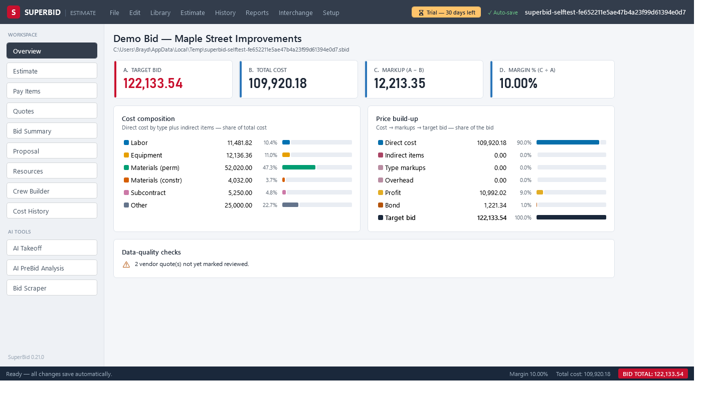
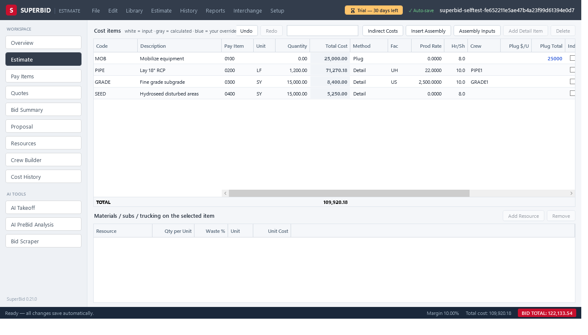
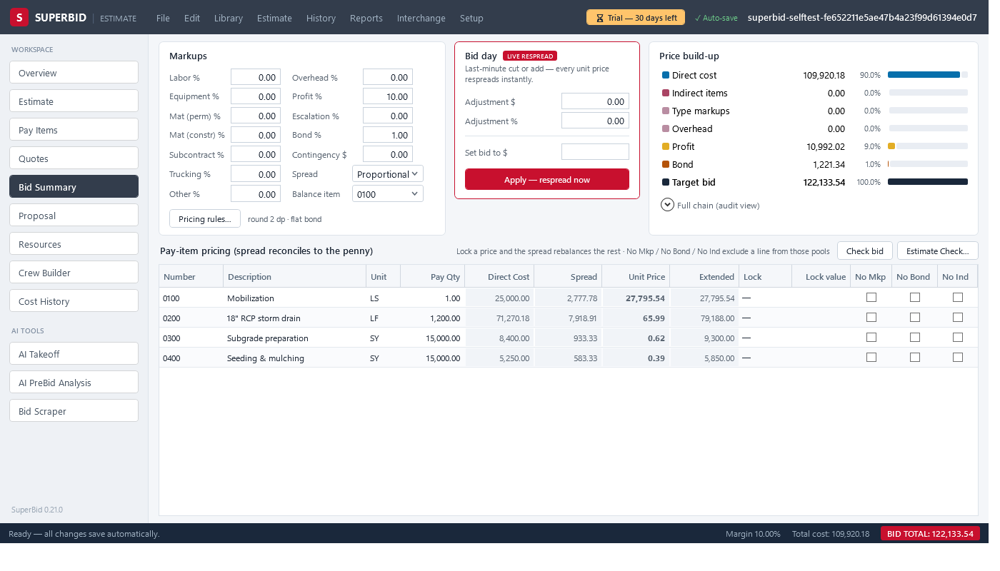
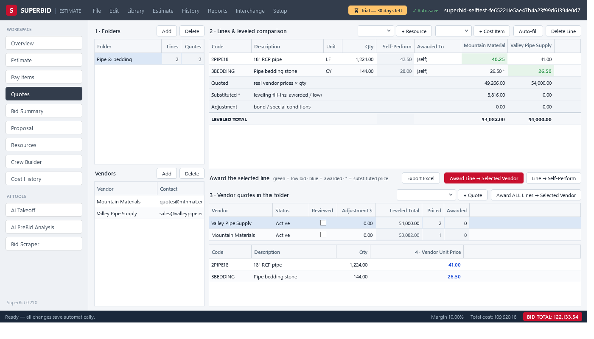
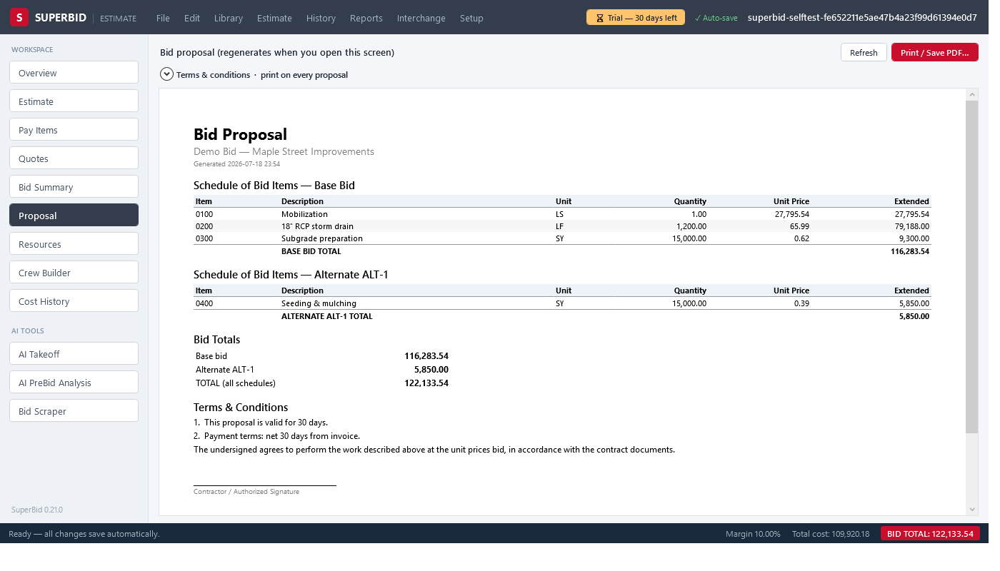
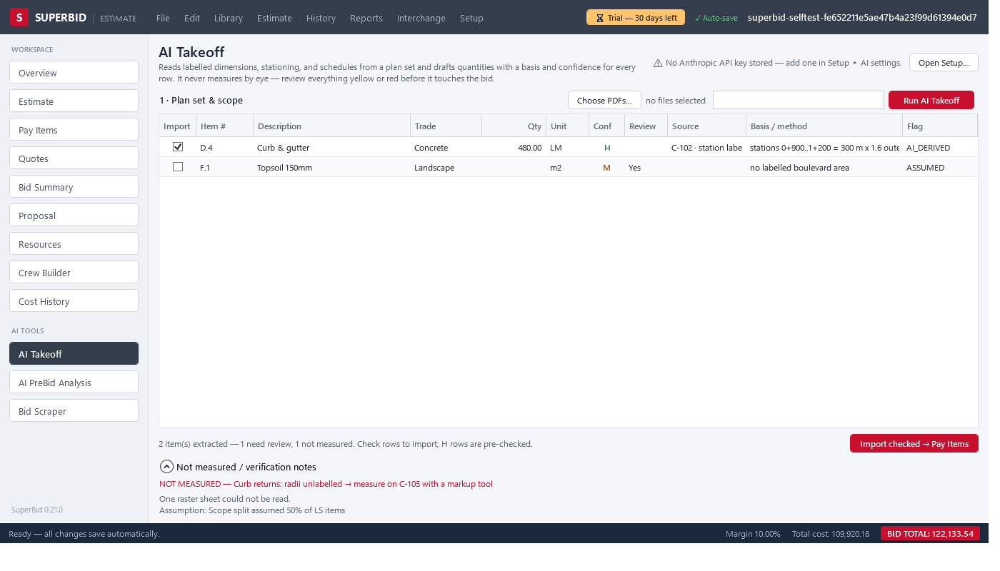
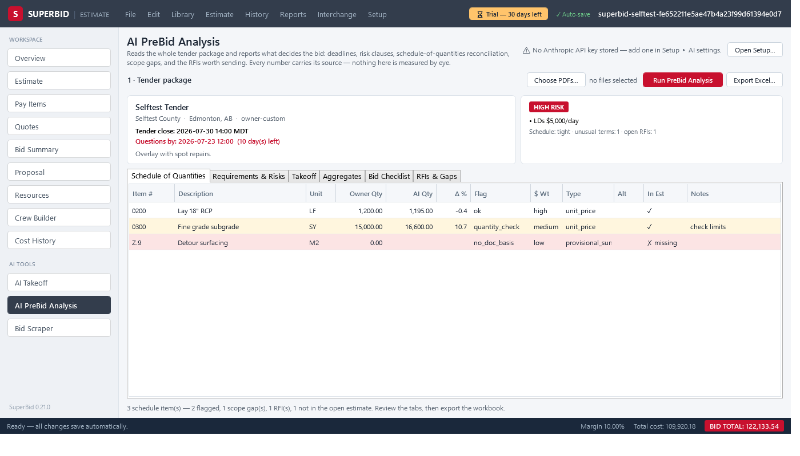
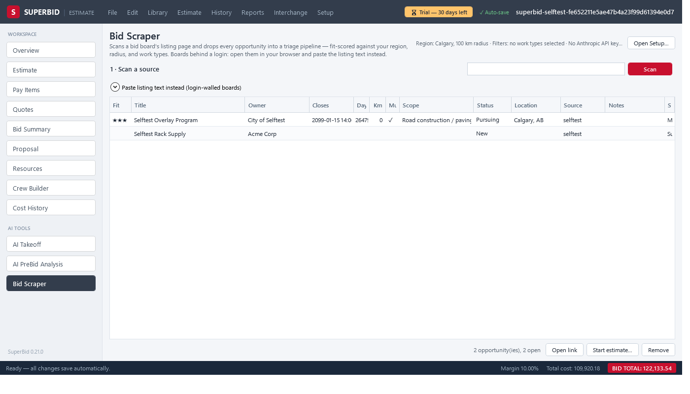

Heavy-civil estimating, without the heavyweight price tag.
SuperBid is a Windows desktop app for civil contractors who bid unit-price work. Build the estimate from the owner's schedule, price it to the penny, level your quotes, and print a proposal — all in one file that never leaves your machine.
- Works fully offline
- Your data stays on your machine
- Every feature included in the trial

The whole bid, one window
SuperBid follows the workflow you already use: schedule in, costs built up, markups applied, proposal out.

Schedule-driven estimating
Import the owner's pay items from Excel or DOT .COL files — or straight from the tender PDF with the optional AI import — and the cost tree builds itself; you add the detail. Six cost methods, nine productivity factor types, crew-hour math, and labor & equipment rate build-ups (including USACE-style equipment costing). Every edit recalculates instantly, spreadsheet-style, and undo survives closing the file.

Pricing that foots to the penny
A full markup chain — indirects, overhead, profit, contingency, bid-day adjustment, and a bond gross-up that keeps the bond an exact percentage of the final price. The spread engine distributes it across pay items with locks, exclusions, rounding bands, and penny-balancing, so the extended total always equals your target. Need to hit a number? "Set bid to $X" solves the adjustment for you.

Quote leveling and awards
Collect vendor quotes side by side, with substitutes filled from the next-best source so you compare complete numbers. Award a quote and the price flows straight into your costs — one undo reverses the whole award. Low bids highlight themselves; per-vendor leveled totals keep everyone honest.

Proposals and reports
A print-ready bid proposal with your terms & conditions, plus bid summary, cost item detail, crew analysis, quote summary, benchmark, and audit trail reports — on screen or as PDF. Export the whole estimate to Excel, write unit prices back into DOT .COL files byte-for-byte, and pull a job-cost budget for accounting.
Parametric assemblies
Pipe trench, flatwork and your own formulas — answer a few inputs and the item tree expands, linked live for re-pricing.
Change orders
Lockable estimate blocks with their own markup. The base bid provably never moves when a CO is added, priced, or rejected.
Estimate Check
A pre-bid wizard runs 14 deterministic checks — unassigned costs, qty gaps, missing bond, locks below cost — with jump-to-fix links.
Cost history
Capture every bid to a history file and benchmark new work against your own low/avg/high — or against market bid-tab files.
Cross-session undo
The undo stack lives in the estimate file. Close it, reopen next week, and Ctrl+Z still works.
One file per bid
An estimate is a single .sbid file on your disk. Copy it, email it, archive it — no server, no subscription lock-in.
AI where it helps. You stay in charge.
Connect your own AI provider account (Anthropic or OpenAI) in Setup. Every AI result lands in a review grid first — nothing enters your estimate until you check it, and quantities are flagged by source and confidence.

AI Takeoff
Feed it the drawing set PDF. It reads labelled quantities — never guesses by eye — and flags each row owner-stated, derived, or assumed. Check the rows you trust and import them as forecast quantities.

AI PreBid Analysis
Point it at the tender documents and get a structured read: scope, risks, key dates, addenda flags, and a schedule that joins against your open estimate — exportable to Excel for the go/no-go meeting.

Bid Scraper
Scan a tender board page and triage the results in one grid — scored 0–3 against your work types and region, with status notes that persist between scans. Start an estimate from a listing in one click.
AI features are optional and off until you add a provider key. AI output is a starting point, not an answer — a qualified estimator reviews everything before it goes in a bid.
Simple licensing
No subscription required. No server. A license belongs to a computer, not to a login.
Free trial
30 days
- Every feature, no limits
- No account, no credit card
- Your estimates stay yours after the trial — files always reopen once licensed
Per-computer license
Email for pricing
- Perpetual license for one computer
- Includes updates via the built-in updater
- Activation is offline — a signed key, no phoning home
- Moving to a new PC? Email for a replacement key
- Install the trial and use it on real bids for up to 30 days.
- Email your machine ID — it's shown under Setup ▸ License key… in the app.
- Paste the key you get back. Done — that computer is licensed.
Questions contractors ask
Does it need an internet connection?
No. Estimating, pricing, quotes, and reports are fully offline — job-trailer friendly. On launch the app checks the public release feed for a newer version (nothing about you or your estimates is sent, and downloads only happen when you click the update button). The optional AI tools and tender-board scans use the internet when you run them.
Where is my data stored?
On your disk. Each estimate is a single .sbid file (an open, self-contained database file); libraries and history are files too. There is no cloud account, and nothing you create is uploaded anywhere — unless you run the optional AI tools, which send only the documents you choose to your own AI provider account.
What happens when the trial ends?
The app asks for a license key at startup. Your files are untouched, and they open again the moment a key is entered. Nothing is deleted, ever.
What do the AI features cost?
They run on your own AI provider account (Anthropic or OpenAI) using your API key, so you pay the provider directly for what you use — typically cents per document. Without a key, the AI screens simply stay off; everything else works.
Can I move my license to a new computer?
Yes — licenses are per-computer, so email your new machine ID to support@superbid.ca and you'll get a replacement key.
What does it run on?
Windows 10 or 11, 64-bit. It's a single self-contained download — no installer chain, no runtimes to hunt down. Unzip and run.
Can it read my DOT's bid files?
SuperBid round-trips fixed-column .COL proposal files (import the schedule, write your unit prices back into the same file byte-for-byte) and imports pay items from Excel; the optional AI import reads them from tender PDFs. For agencies using AASHTOWare .ebsx, convert to .COL in AASHTOWare first.